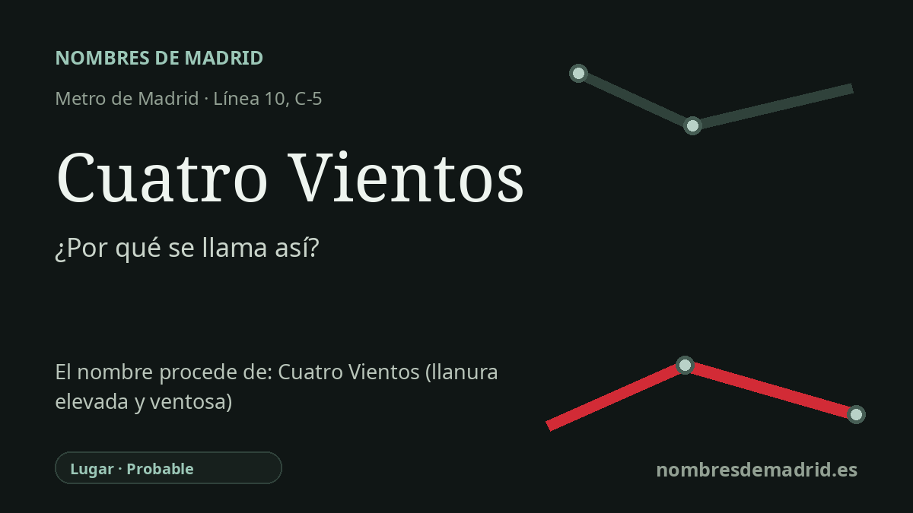

Publicado el · Investigación de Nombres de Madrid · Cómo verificamos cada origen · 9 fuentes consultadas
Respuesta rápida
Cuatro Vientos toma su nombre de la zona y del aeródromo histórico cercanos. El origen más antiguo procede de un páramo documentado oficialmente como 'A los Cuatro Vientos', es decir, abierto 'a los cuatro vientos'.
La historia del nombre
La estación de Cuatro Vientos toma su nombre del topónimo cercano de Cuatro Vientos, hoy asociado sobre todo al aeródromo y base aérea de Madrid-Cuatro Vientos. La propia Comunidad de Madrid ha presentado la identidad de la estación de Metro como vinculada al aeropuerto, señalando que este dio nombre a la estación de la línea 10 cuando se inauguró en 2003.
El nombre es anterior al intercambiador moderno. En el expediente del BOE sobre la Torre de Señales, el Estado indica que el 11 de enero de 1911 se eligió una franja de terreno en el páramo conocido como 'A los Cuatro Vientos' para construir el primer aeródromo militar de España. Esa formulación es clave: muestra que el topónimo ya existía antes de que se instalara allí la escuela de aviación.
Literalmente, a los cuatro vientos significa 'en todas direcciones' o 'por todas partes'. La RAE define la expresión como 'en todas direcciones, por todas partes', y encaja bien con la imagen de una llanura abierta y expuesta en el borde occidental de Madrid. La explicación habitual de que se trataba de una meseta ventosa es verosímil, pero la afirmación exacta de que soplaban vientos desde los cuatro puntos cardinales debe tratarse como interpretación si no aparece una fuente histórica local más directa.
El aeródromo convirtió después aquel topónimo en un hito nacional de la aviación. La historia de Aena recoge que una comisión militar propuso los terrenos de Cuatro Vientos el 11 de enero de 1911, que las primeras tropas llegaron en febrero y que el primer avión procedente de Ciudad Lineal aterrizó allí el 12 de marzo. Después llegaron edificios, laboratorios, escuelas de formación y la Torre de Señales, hoy protegida como Bien de Interés Cultural.
La historia ferroviaria tiene su propia cronología. El apeadero de Cercanías de Cuatro Vientos formaba parte del ferrocarril Aluche-Móstoles abierto en 1976, más tarde integrado en la línea C-5. La estación de Metro de la línea 10 abrió el 11 de abril de 2003 junto a la estación ferroviaria, convirtiendo Cuatro Vientos en un intercambiador cuyo nombre conserva tanto una antigua expresión paisajística como un siglo de memoria aeronáutica.